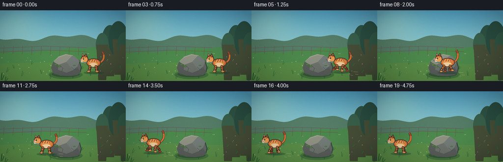
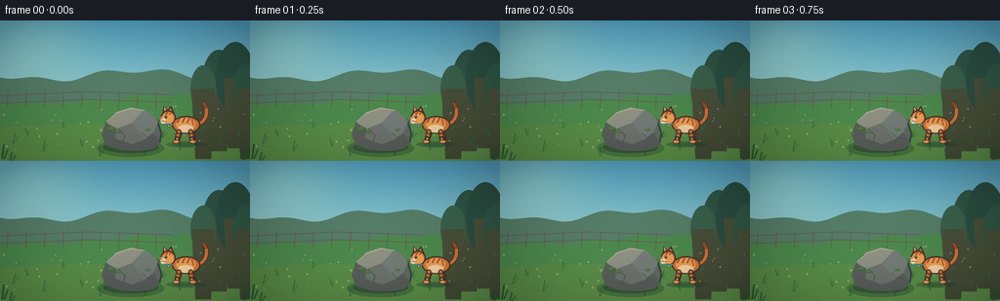

CODING AGENTS AS PIXEL WORLD MODELS
traex/DeepSeek-V4.1-Flash · dynamic_spatial_relationship_0009
点击播放 · 原生 RGB 像素
逐轮保存的候选
回放视频、检查图与代码变化。
每份候选均可单独播放。实际图片检查记录在下方工具轨迹中。
候选 01播放与检查图
点击播放 · 原生 RGB 像素


展开代码变化
--- 上一保存版本 +++ 本次保存版本 @@ -0,0 +1,419 @@ +from pathlib import Path +import math + +import numpy as np +from PIL import Image, ImageDraw, ImageFilter + +import artifact_io + + +CASE_DIR = Path(__file__).resolve().parent +WIDTH, HEIGHT = 256, 144 +FRAMES, FPS = 20, 4.0 +SS = 4 +W, H = WIDTH * SS, HEIGHT * SS + + +def s(value): + return int(round(value * SS)) + + +def xy(point): + return tuple(s(v) for v in point) + + +def box(values): + return tuple(s(v) for v in values) + + +def polygon(draw, points, fill, outline=None, width=1): + draw.polygon([xy(p) for p in points], fill=fill, outline=outline, width=s(width)) + + +def ellipse(draw, bounds, fill, outline=None, width=1): + draw.ellipse(box(bounds), fill=fill, outline=outline, width=s(width)) + + +def line(draw, points, fill, width=1, joint="curve"): + draw.line([xy(p) for p in points], fill=fill, width=s(width), joint=joint) + + +def rounded_capsule(draw, p0, p1, radius, fill, outline=None, outline_width=1): + dx, dy = p1[0] - p0[0], p1[1] - p0[1] + length = max(0.001, math.hypot(dx, dy)) + nx, ny = -dy / length * radius, dx / length * radius + points = [ + (p0[0] + nx, p0[1] + ny), + (p1[0] + nx, p1[1] + ny), + (p1[0] - nx, p1[1] - ny), + (p0[0] - nx, p0[1] - ny), + ] + polygon(draw, points, fill, outline, outline_width) + ellipse(draw, (p0[0] - radius, p0[1] - radius, p0[0] + radius, p0[1] + radius), + fill, outline, outline_width) + ellipse(draw, (p1[0] - radius, p1[1] - radius, p1[0] + radius, p1[1] + radius), + fill, outline, outline_width) + + +def bezier_points(control, steps=32): + pts = [] + for i in range(steps + 1): + t = i / steps + u = 1 - t + x = u**3 * control[0][0] + 3 * u*u*t * control[1][0] + 3 * u*t*t * control[2][0] + t**3 * control[3][0] + y = u**3 * control[0][1] + 3 * u*u*t * control[1][1] + 3 * u*t*t * control[2][1] + t**3 * control[3][1] + pts.append((x, y)) + return pts + + +def smoothstep(a, b, x): + if a == b: + return 1.0 if x >= b else 0.0 + t = max(0.0, min(1.0, (x - a) / (b - a))) + return t * t * (3 - 2 * t) + + +def ease_in_out(x): + x = max(0.0, min(1.0, x)) + return x * x * (3 - 2 * x) + + +def make_texture(seed): + rng = np.random.default_rng(seed) + noise = rng.normal(0, 1, (HEIGHT, WIDTH, 1)) + noise = np.clip(noise * 4.0, -8, 8) + return noise + + +def background(frame_index): + # Smooth vertical sky, distant hills, and a warm meadow with a soft sun glow. + y = np.linspace(0, 1, H)[:, None, None] + x = np.linspace(0, 1, W)[None, :, None] + sky_top = np.array([82, 163, 197], dtype=float) + sky_bottom = np.array([191, 225, 201], dtype=float) + sky = sky_top * (1 - y) + sky_bottom * y + sky = np.repeat(sky, W, axis=1) + + # Golden light near the upper-left, kept subtle so the cat remains the focal point. + cx, cy = 0.12 * W, 0.12 * H + xx = np.arange(W)[None, :] + yy = np.arange(H)[:, None] + glow = np.exp(-(((xx - cx) / (0.34 * W))**2 + ((yy - cy) / (0.45 * H))**2) * 2.2) + sky += glow[:, :, None] * np.array([32, 24, 5]) + + # Far hills. + hill_line = (0.39 * H + 0.035 * H * np.sin(np.linspace(0, 8.5, W)) + + 0.018 * H * np.sin(np.linspace(0, 24, W) + 1.2)).astype(int) + for j in range(H): + mask = j >= hill_line + if np.any(mask): + sky[j, mask] = np.array([86, 126, 104]) + + # Near hill / meadow begins around the middle of the image. + meadow_line = (0.56 * H + 0.03 * H * np.sin(np.linspace(0, 5.2, W) + 0.8) + + 0.009 * H * np.sin(np.linspace(0, 31, W))).astype(int) + for j in range(H): + mask = j >= meadow_line + if np.any(mask): + shade = (j / H - 0.55) * 24 + sky[j, mask] = np.array([76 + shade, 137 + shade, 77 + shade * 0.35]) + + # Warm foreground band. + fore_line = (0.75 * H + 0.012 * H * np.sin(np.linspace(0, 7.0, W) + 2.4)).astype(int) + for j in range(H): + mask = j >= fore_line + if np.any(mask): + shade = (j / H - 0.75) * 30 + sky[j, mask] = np.array([91 + shade, 144 + shade, 74 + shade * 0.3]) + + # Fine grain gives the low-resolution render some material rather than flat bands. + grain = np.random.default_rng(100 + frame_index).normal(0, 2.1, (H, W, 1)) + sky = np.clip(sky + grain, 0, 255).astype(np.uint8) + return Image.fromarray(sky, "RGB") + + +def draw_distant_details(im): + d = ImageDraw.Draw(im, "RGBA") + # Tree line at right, behind the action. + trees = [ + (224, 62, 17, 32, (48, 86, 71, 255)), + (241, 59, 20, 37, (43, 79, 66, 255)), + (208, 70, 13, 24, (58, 98, 77, 255)), + (254, 70, 15, 26, (48, 88, 70, 255)), + ] + for cx, base_y, rx, ry, col in trees: + ellipse(d, (cx - rx, base_y - ry, cx + rx, base_y + ry), col) + polygon(d, [(cx - s(3), base_y), (cx + s(3), base_y), + (cx + s(2), base_y + s(18)), (cx - s(2), base_y + s(18))], + (72, 80, 57, 255)) + + # Receding fence, deliberately small and low contrast. + fence = (105, 83, 77, 155) + line(d, [(0, 77), (90, 73), (176, 76)], fence, 1.2) + line(d, [(0, 85), (91, 81), (176, 84)], fence, 1.2) + for x in range(8, 170, 19): + y0 = 72 + (x / 170) * 3 + line(d, [(x, y0), (x - 1, y0 + 17)], fence, 1.0) + + # A few distant flower heads; small enough to read as texture, not clutter. + rng = np.random.default_rng(5) + for _ in range(42): + x = rng.uniform(3, 253) + y = rng.uniform(88, 132) + if 106 < x < 154 and 88 < y < 130: + continue + col = (237, 221, 164, 105) if rng.random() < 0.55 else (226, 164, 169, 95) + r = rng.uniform(0.55, 1.1) + ellipse(d, (x - r, y - r, x + r, y + r), col) + + # Grass tufts are generated once per frame but remain stable enough in position. + for x, y, h, lean in [ + (13, 126, 10, 3), (28, 118, 7, -2), (44, 134, 11, 2), + (64, 110, 6, 1), (84, 129, 8, -2), (166, 120, 7, 2), + (184, 133, 10, -1), (205, 113, 7, 2), (224, 127, 8, 1), + (244, 118, 7, -2), (102, 139, 9, 1), (148, 138, 8, -1), + ]: + line(d, [(x, y), (x + lean, y - h)], (43, 102, 58, 190), 1.1) + line(d, [(x + 1, y), (x + lean + 3, y - h * 0.7)], (61, 119, 60, 165), 0.9) + + +def draw_rock(im): + d = ImageDraw.Draw(im, "RGBA") + # Contact shadow. + ellipse(d, (99, 122, 168, 140), (33, 70, 48, 90)) + ellipse(d, (105, 124, 162, 136), (32, 61, 45, 120)) + + # Main silhouette, irregular enough to read as a boulder rather than a pebble. + pts = [ + (108, 128), (104, 117), (109, 104), (119, 94), (134, 89), + (151, 93), (162, 103), (166, 116), (164, 126), (157, 132), + (142, 134), (123, 133), + ] + polygon(d, pts, (100, 107, 99, 255), (54, 70, 70, 255), 1.8) + + # Faceted planes: lit upper-left, cool shadow lower-right. + polygon(d, [(109, 105), (119, 94), (134, 89), (147, 92), (135, 105), (119, 111)], + (144, 146, 132, 255)) + polygon(d, [(135, 105), (147, 92), (151, 93), (162, 103), (157, 115), (148, 122)], + (117, 125, 121, 255)) + polygon(d, [(109, 105), (119, 111), (135, 105), (148, 122), (157, 115), + (164, 126), (157, 132), (142, 134), (123, 133), (108, 128), + (104, 117)], + (91, 96, 93, 255)) + polygon(d, [(119, 111), (135, 105), (148, 122), (135, 127), (118, 121)], + (111, 117, 110, 255)) + # Thin pale rim light and a couple of fissures. + line(d, [(109, 104), (119, 95), (134, 90), (148, 92)], (192, 189, 165, 180), 1.1) + line(d, [(121, 111), (128, 118), (126, 124)], (69, 82, 81, 180), 0.9) + line(d, [(145, 115), (150, 120), (158, 121)], (69, 82, 81, 150), 0.7) + + # Moss patches on the shaded shoulder. + for cx, cy, rx, ry in [(114, 111, 4.8, 2.1), (121, 114, 3.2, 1.7), (151, 112, 2.8, 1.3)]: + ellipse(d, (cx - rx, cy - ry, cx + rx, cy + ry), (70, 111, 63, 210)) + ellipse(d, (cx - rx * 0.7, cy - ry * 0.75, cx + rx * 0.45, cy + ry * 0.1), + (99, 137, 70, 185)) + + +def draw_shadow(im, cx, y, scale, opacity=90): + d = ImageDraw.Draw(im, "RGBA") + # Shadow stays on the ground plane while the cat's body bobs. + ellipse(d, (cx - 21 * scale, y - 3.0 * scale, cx + 21 * scale, y + 3.2 * scale), + (31, 70, 48, opacity)) + ellipse(d, (cx - 14 * scale, y - 1.5 * scale, cx + 15 * scale, y + 2.3 * scale), + (31, 63, 44, int(opacity * 0.62))) + + +def draw_leg(d, hip, knee, paw, front_col, back_col): + rounded_capsule(d, hip, knee, 2.55, back_col, (69, 53, 45, 255), 1.0) + rounded_capsule(d, knee, paw, 2.0, front_col, (69, 53, 45, 255), 0.9) + ellipse(d, (paw[0] - 3.2, paw[1] - 2.1, paw[0] + 3.7, paw[1] + 2.1), + front_col, (69, 53, 45, 255), 0.8) + + +def draw_cat(im, cx, ground_y, phase, run_amount, scale=1.0): + d = ImageDraw.Draw(im, "RGBA") + orange = (215, 116, 55, 255) + light = (239, 161, 86, 255) + deep = (164, 78, 42, 255) + dark = (67, 51, 43, 255) + cream = (247, 213, 165, 255) + stripe = (157, 76, 43, 255) + + # Body bob and an exaggerated but readable four-leg run cycle. + bob = (-1.1 * abs(math.sin(phase * 2)) * run_amount) + cy = ground_y - 20.0 * scale + bob + stride = 5.0 * math.sin(phase) * run_amount + lift_a = max(0.0, math.sin(phase)) * 3.0 * run_amount + lift_b = max(0.0, -math.sin(phase)) * 3.0 * run_amount + + # Tail behind the body, with a lively S-curve. + tail_wag = math.sin(phase * 0.72 + 0.4) * (2.4 if run_amount > 0.2 else 1.2) + tail = bezier_points([ + (cx + 11 * scale, cy + 1 * scale), + (cx + 22 * scale, cy - 2 * scale), + (cx + 24 * scale, cy - 15 * scale + tail_wag), + (cx + 18 * scale, cy - 22 * scale + tail_wag), + ]) + line(d, tail, dark, 4.6 * scale) + line(d, tail, orange, 3.2 * scale) + line(d, tail[-9:], stripe, 3.2 * scale) + + # Back legs first. + draw_leg(d, + (cx + 6.5 * scale, cy + 8.5 * scale), + (cx + 8.0 * scale + stride, cy + 15.0 * scale - lift_b * 0.3), + (cx + 9.0 * scale + stride, ground_y - 1.8 * scale - lift_b), + deep, deep) + draw_leg(d, + (cx - 6.0 * scale, cy + 8.5 * scale), + (cx - 8.0 * scale - stride, cy + 15.0 * scale - lift_a * 0.3), + (cx - 9.0 * scale - stride, ground_y - 1.8 * scale - lift_a), + deep, deep) + + # Main body. + ellipse(d, (cx - 14 * scale, cy - 8 * scale, cx + 15 * scale, cy + 10 * scale), + orange, dark, 1.3) + ellipse(d, (cx - 10 * scale, cy - 6 * scale, cx + 10 * scale, cy + 7 * scale), + light) + ellipse(d, (cx - 8 * scale, cy + 1 * scale, cx + 8 * scale, cy + 9 * scale), + cream) + + # Tabby stripes on the flank. + for offset in (-6, -1, 4): + line(d, [(cx + offset * scale, cy - 6.2 * scale), + (cx + (offset - 2.5) * scale, cy - 1.0 * scale)], + stripe, 1.3 * scale) + line(d, [(cx + 6.0 * scale, cy - 4.8 * scale), + (cx + 8.0 * scale, cy + 1.5 * scale)], stripe, 1.1 * scale) + + # Front legs, offset from the back pair for depth. + draw_leg(d, + (cx - 7.0 * scale, cy + 8.0 * scale), + (cx - 8.8 * scale + stride * 0.75, cy + 15.5 * scale - lift_a * 0.25), + (cx - 10.0 * scale + stride * 0.75, ground_y - 1.7 * scale - lift_a), + light, orange) + draw_leg(d, + (cx + 5.2 * scale, cy + 8.0 * scale), + (cx + 6.2 * scale - stride * 0.75, cy + 15.5 * scale - lift_b * 0.25), + (cx + 7.0 * scale - stride * 0.75, ground_y - 1.7 * scale - lift_b), + light, orange) + + # Head faces left, with pointed ears and a small profile. + hx, hy = cx - 17.2 * scale, cy - 6.2 * scale + polygon(d, [(hx - 6.5 * scale, hy - 3.0 * scale), + (hx - 5.2 * scale, hy - 12.0 * scale), + (hx + 0.2 * scale, hy - 6.5 * scale)], + orange, dark, 1.2) + polygon(d, [(hx - 2.0 * scale, hy - 6.4 * scale), + (hx + 2.2 * scale, hy - 12.2 * scale), + (hx + 6.0 * scale, hy - 4.0 * scale)], + orange, dark, 1.2) + polygon(d, [(hx - 5.0 * scale, hy - 8.5 * scale), + (hx - 4.6 * scale, hy - 11.0 * scale), + (hx - 2.7 * scale, hy - 8.0 * scale)], + (236, 159, 151, 255)) + ellipse(d, (hx - 8.2 * scale, hy - 7.5 * scale, hx + 7.0 * scale, hy + 7.5 * scale), + orange, dark, 1.3) + ellipse(d, (hx - 7.0 * scale, hy - 5.0 * scale, hx + 5.0 * scale, hy + 6.5 * scale), + light) + ellipse(d, (hx - 8.5 * scale, hy + 0.2 * scale, hx - 3.0 * scale, hy + 6.2 * scale), + cream) + + # Face details. + eye_x = hx - 3.0 * scale + ellipse(d, (eye_x - 1.4 * scale, hy - 2.8 * scale, + eye_x + 1.2 * scale, hy + 0.7 * scale), + (60, 88, 64, 255)) + ellipse(d, (eye_x - 0.5 * scale, hy - 2.5 * scale, + eye_x + 0.5 * scale, hy - 0.1 * scale), + dark) + ellipse(d, (eye_x - 0.3 * scale, hy - 2.2 * scale, + eye_x + 0.25 * scale, hy - 1.4 * scale), + (244, 238, 205, 255)) + ellipse(d, (hx - 8.5 * scale, hy - 1.0 * scale, hx - 6.0 * scale, hy + 1.3 * scale), + (232, 130, 123, 255)) + line(d, [(hx - 7.3 * scale, hy + 3.0 * scale), (hx - 2.8 * scale, hy + 4.0 * scale)], + dark, 0.8 * scale) + for dy in (1.3, 3.1): + line(d, [(hx - 8.0 * scale, hy + 4.0 * scale), + (hx - 12.5 * scale, hy + dy)], (82, 61, 50, 255), 0.55 * scale) + + # Head stripes and collar. + line(d, [(hx - 1.0 * scale, hy - 5.7 * scale), + (hx - 3.1 * scale, hy - 3.4 * scale)], stripe, 1.3 * scale) + line(d, [(hx + 2.0 * scale, hy - 5.1 * scale), + (hx + 0.2 * scale, hy - 3.0 * scale)], stripe, 1.0 * scale) + line(d, [(hx - 5.5 * scale, hy + 6.5 * scale), + (hx + 4.0 * scale, hy + 6.8 * scale)], (63, 145, 146, 255), 2.1 * scale) + ellipse(d, (hx - 1.2 * scale, hy + 7.0 * scale, + hx + 1.2 * scale, hy + 9.5 * scale), (234, 194, 77, 255), + (86, 66, 43, 255), 0.6) + + +def draw_motion_marks(im, cx, ground_y, run_amount, phase): + if run_amount < 0.18: + return + d = ImageDraw.Draw(im, "RGBA") + # A few short dust ticks behind the paws communicate direction without text. + alpha = int(120 * run_amount) + for i, (dx, dy, length) in enumerate([(25, 2, 9), (29, 7, 6), (21, 9, 5)]): + x = cx + dx + 2 * math.sin(phase + i) + y = ground_y - 2 + dy + line(d, [(x, y), (x + length, y + 0.6)], (222, 204, 156, alpha), 1.0) + for i in range(3): + x = cx - 22 - i * 4 + y = ground_y - 12 - i * 3 + line(d, [(x, y), (x - 6, y + 1)], (247, 226, 173, int(alpha * 0.6)), 0.8) + + +def draw_scene(frame_index): + im = background(frame_index) + draw_distant_details(im) + draw_rock(im) + + # Establish right-of-rock for the first four frames, cross, then settle left. + if frame_index <= 3: + progress = 0.0 + run = 0.0 + phase = 0.0 + else: + progress = ease_in_out((frame_index - 3) / 13.0) + run = min(1.0, (frame_index - 3) / 2.0) + if frame_index >= 17: + run = max(0.0, 1.0 - (frame_index - 16) / 3.0) + phase = (frame_index - 4) * 1.35 + + cx = 190 - 143 * progress + ground_y = 126 + 1.5 * math.sin(frame_index * 0.8) * run + scale = 1.0 + draw_shadow(im, cx + 1, ground_y + 1, scale, 92) + draw_motion_marks(im, cx, ground_y, run, phase) + draw_cat(im, cx, ground_y, phase, run, scale) + + # Foreground grass silhouettes frame the action and anchor the low camera. + d = ImageDraw.Draw(im, "RGBA") + for x, y, h, col in [ + (2, 142, 15, (43, 95, 52, 255)), + (10, 144, 9, (55, 112, 58, 255)), + (249, 143, 14, (42, 91, 51, 255)), + (257, 144, 10, (58, 116, 59, 255)), + ]: + line(d, [(x, y), (x + 2, y - h)], col, 1.8) + line(d, [(x + 2, y), (x + 6, y - h * 0.65)], col, 1.2) + + # Gentle vignette and downsampling. + arr = np.asarray(im).astype(np.float32) + yy, xx = np.mgrid[0:H, 0:W] + vignette = 1.0 - 0.16 * (((xx - W / 2) / (W / 2))**2 + ((yy - H / 2) / (H / 2))**2) + arr *= np.clip(vignette[:, :, None], 0.72, 1.0) + im = Image.fromarray(np.clip(arr, 0, 255).astype(np.uint8), "RGB") + return np.asarray(im.resize((WIDTH, HEIGHT), Image.Resampling.LANCZOS), dtype=np.uint8) + + +def main(): + frames = [draw_scene(i) for i in range(FRAMES)] + artifact_io.save(frames, CASE_DIR) + + +if __name__ == "__main__": + main()
候选 02播放与检查图
点击播放 · 原生 RGB 像素

展开代码变化
--- 上一保存版本
+++ 本次保存版本
@@ -1,8 +1,9 @@
from pathlib import Path
import math
+import subprocess
import numpy as np
-from PIL import Image, ImageDraw, ImageFilter
+from PIL import Image, ImageDraw
import artifact_io
@@ -129,7 +130,7 @@
# Fine grain gives the low-resolution render some material rather than flat bands.
grain = np.random.default_rng(100 + frame_index).normal(0, 2.1, (H, W, 1))
sky = np.clip(sky + grain, 0, 255).astype(np.uint8)
- return Image.fromarray(sky, "RGB")
+ return Image.fromarray(sky)
def draw_distant_details(im):
@@ -406,13 +407,25 @@
yy, xx = np.mgrid[0:H, 0:W]
vignette = 1.0 - 0.16 * (((xx - W / 2) / (W / 2))**2 + ((yy - H / 2) / (H / 2))**2)
arr *= np.clip(vignette[:, :, None], 0.72, 1.0)
- im = Image.fromarray(np.clip(arr, 0, 255).astype(np.uint8), "RGB")
+ im = Image.fromarray(np.clip(arr, 0, 255).astype(np.uint8))
return np.asarray(im.resize((WIDTH, HEIGHT), Image.Resampling.LANCZOS), dtype=np.uint8)
def main():
frames = [draw_scene(i) for i in range(FRAMES)]
artifact_io.save(frames, CASE_DIR)
+ try:
+ import imageio_ffmpeg
+ ffmpeg = imageio_ffmpeg.get_ffmpeg_exe()
+ subprocess.run([
+ ffmpeg, "-y", "-loglevel", "error", "-framerate", str(FPS),
+ "-i", str(CASE_DIR / "frames" / "%02d.png"),
+ "-c:v", "libx264", "-pix_fmt", "yuv420p", "-crf", "16",
+ "-movflags", "+faststart", str(CASE_DIR / "output.mp4"),
+ ], check=True)
+ except (ImportError, FileNotFoundError):
+ # The required artifacts are already saved; MP4 is a convenience copy.
+ pass
if __name__ == "__main__":
可观测工具轨迹
实际执行的命令与返回图片。
命令 1exit 0
/bin/bash -c "sed -n '1,240p' prompt.txt"
命令 2exit 0
/bin/bash -c "sed -n '1,320p' GENERATION_RULES.md"
命令 3exit 0
/bin/bash -c 'cat task_spec.json'
命令 4exit 0
/bin/bash -c "find . -maxdepth 2 -type f -printf '%p\\n' | sort"
命令 5exit 0
/bin/bash -c "sed -n '1,320p' artifact_io.py"
命令 6exit 0
/bin/bash -c "sed -n '1,260p' player_template.html"
命令 7exit 0
/bin/bash -c "python3 - <<'PY' import importlib.util for m in ['numpy','PIL','cv2','imageio','matplotlib']: print(m, bool(importlib.util.find_spec(m))) PY"
命令 8exit 0
/bin/bash -c 'python3 generate.py'
命令 9exit 0
/bin/bash -c "python3 - <<'PY'
from PIL import Image
im=Image.open('inspection.png')
print(im.size, im.mode)
im.resize((im.width*2, im.height*2), Image.Resampling.NEAREST).save('.tmp/inspection_2x.png')
PY"命令 10exit 0
/bin/bash -c 'command -v chafa || true; command -v viu || true; command -v jp2 || true; command -v img2txt || true'
命令 11exit 0
/bin/bash -c "python3 - <<'PY'
from PIL import Image
import numpy as np
for i in [0,1,3,4,8,12,16,19]:
im=np.asarray(Image.open(f'frames/{i:02d}.png')).astype(float)
print(i, 'mean', im.mean((0,1)).round(1), 'std', im.std((0,1)).round(1), 'range', (im.min(),im.max()))
PY"命令 12exit 0
/bin/bash -c "python3 - <<'PY'
from PIL import Image, ImageOps
import numpy as np
chars='@%#*+=-:. '
for idx in [0,4,8,12,16,19]:
im=Image.open(f'frames/{idx:02d}.png').convert('L').resize((80,45),Image.Resampling.BILINEAR)
a=np.asarray(im)
# increase contrast
a=np.clip((a-35)*1.8,0,255)
print('\\nFRAME',idx)
for row in a:
print(''.join(chars[min(len(chars)-1,int(v/256*len(chars)))] for v in row))
PY"命令 13exit 0
/bin/bash -c "python3 - <<'PY'
from PIL import Image
import numpy as np
for i in range(20):
a=np.asarray(Image.open(f'frames/{i:02d}.png')).astype(int)
r,g,b=a[:,:,0],a[:,:,1],a[:,:,2]
# saturated orange body pixels
m=(r>120)&(r>g*1.28)&(g>b*1.15)&(r-b>45)
y,x=np.where(m)
print(f'{i:02d}: n={len(x):4d} bbox=({x.min():3d},{y.min():3d})-({x.max():3d},{y.max():3d}) centroid=({x.mean():.1f},{y.mean():.1f})' if len(x) else f'{i:02d}: none')
PY"命令 14exit 0
/bin/bash -c 'command -v ffmpeg; ffmpeg -version | head -n 2'
命令 15exit 0
/bin/bash -c "du -h frames/*.png pixels.npz index.html inspection.png | tail -n 8; python3 - <<'PY'
import numpy as np
z=np.load('pixels.npz')['pixels']
print('pixels', z.shape, z.dtype, int(z.min()), int(z.max()))
PY"命令 16exit 0
/bin/bash -c "python3 - <<'PY' import imageio_ffmpeg print(imageio_ffmpeg.get_ffmpeg_exe()) PY"
命令 17exit 0
/bin/bash -c "python3 - <<'PY' import imageio_ffmpeg, subprocess exe=imageio_ffmpeg.get_ffmpeg_exe() cmd=[exe,'-y','-framerate','4','-i','frames/%02d.png','-c:v','libx264','-pix_fmt','yuv420p','-crf','16','-movflags','+faststart','output.mp4'] p=subprocess.run(cmd,stdout=subprocess.PIPE,stderr=subprocess.STDOUT,text=True) print(p.stdout[-3000:]) raise SystemExit(p.returncode) PY"
命令 18exit 0
/bin/bash -c "python3 - <<'PY'
from pathlib import Path
from PIL import Image
import numpy as np, json, imageio_ffmpeg, subprocess
spec=json.loads(Path('task_spec.json').read_text())
files=sorted(Path('frames').glob('*.png'))
assert len(files)==spec['frames']==20
arr=[]
for i,p in enumerate(files):
im=Image.open(p)
assert im.size==(spec['width'],spec['height']) and im.mode=='RGB', (p,im.size,im.mode)
a=np.asarray(im)
assert a.std()>10 and np.unique(a).size>100
arr.append(a)
z=np.load('pixels.npz')['pixels']
assert z.shape==(144,256,20)
assert z.dtype==np.uint32
for i,a in enumerate(arr):
packed=(a[:,:,0].astype(np.uint32)<<16)|(a[:,:,1].astype(np.uint32)<<8)|a[:,:,2].astype(np.uint32)
assert np.array_equal(z[:,:,i],packed), i
exe=imageio_ffmpeg.get_ffmpeg_exe()
out=subprocess.run([exe,'-i','output.mp4'],stdout=subprocess.PIPE,stderr=subprocess.STDOUT,text=True).stdout
print('frames',len(files),'size',arr[0].shape,'fps',spec['fps'],'npz verified')
print('\\n'.join(line for line in out.splitlines() if 'Duration:' in line or 'Stream #0:0' in line or 'frame=' in line))
print('output bytes',Path('output.mp4').stat().st_size,'index bytes',Path('index.html').stat().st_size)
PY"命令 19exit 0
/bin/bash -c "python3 generate.py && python3 - <<'PY'
from pathlib import Path
from PIL import Image
import numpy as np, json, imageio_ffmpeg, subprocess
spec=json.loads(Path('task_spec.json').read_text())
files=sorted(Path('frames').glob('*.png'))
assert len(files)==20
for p in files:
im=Image.open(p)
assert im.size==(256,144) and im.mode=='RGB'
z=np.load('pixels.npz')['pixels']
assert z.shape==(144,256,20) and z.dtype==np.uint32
info=subprocess.run([imageio_ffmpeg.get_ffmpeg_exe(),'-i','output.mp4'],stdout=subprocess.PIPE,stderr=subprocess.STDOUT,text=True).stdout
assert 'Duration: 00:00:05.00' in info and '256x144' in info and '4 fps' in info
print('verified: 20 RGB frames, 256x144, 5.0s, 4 fps; npz and mp4 valid')
PY"保存候选 2 份；完成命令 19 次；可验证图片返回 0 张。原始 API 响应与完整日志保留在本地。